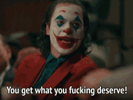
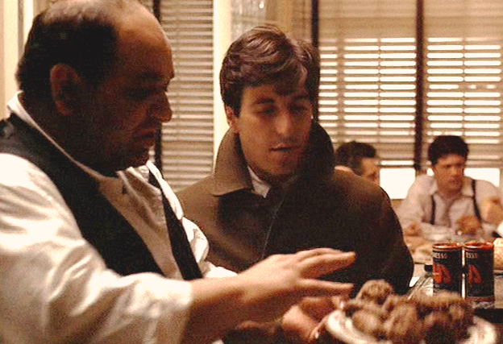
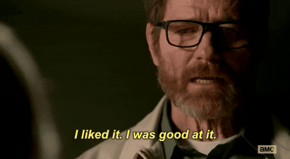

“
You clearly don't know who you're talking to, so let me clue you in.
I am not in danger, Skyler. I am the danger.
A guy opens his door and gets shot, and you think that of me?
No! I am the one who knocks!
”
Don't you got just five minutes to talk?

Scheduled time in order to talk about you
Getting the most out of it
Big responsability
Listening
Caring
Not being missed
WHY
Unblocking
Dealing with problems and conflicts
Give and get feedback
Career development
Measuring temperature
Relationship development
Alignment checking
TIPS
“
You see, you start out with a little bit of oil. Then you fry some garlic. Then you throw in some tomatoes, tomato paste, you fry it; ya make sure it doesn’t stick. You get it to a boil; you shove in all your sausage and your meatballs; heh…? And a little bit o’ wine. An’ a little bit o’ sugar, and that’s my trick.
”

Half an hour every two weeks
Be genuine and keep your word
Take notes
Get in the flow and make it feel natural
FIRST ONE ON ONE
Why are we here?
What do you do in your free time? who are you? Tell me more about yourself
How would you like to receive feedback?
What do you expect from a manager?
How do you feel about your role?
Where does your motivation come from?
SUBSEQUENT ONE ON ONES
How are you doing?
In the project
In the company
In your life
What can I do for you?
Unblocking issues
Goals followup
Give and receive feedback
FEEDBACK

The good one always
Everytime
The bad one is just a improvement opportunity
Is it really needed to be shared?
The ugly one
It has to be shared
DISCUSS
Are they acting like the best manager / report / partner you could wish for?
Are you?
Why or why not?
Discuss
What have you already told someone else about this person (or heard others say)?
Share with the
Discuss
Dont be a toxic manager
BIO method (objectivity)
Behavior
Observe a specific behavior and then explain what you observed
Impact
Tell them what kind of impact that behavior had on you, the team, and / or the organization
Option
Provide a suggestion or an expectation for future behavior, or alternatively ask how the other person wants to move forward